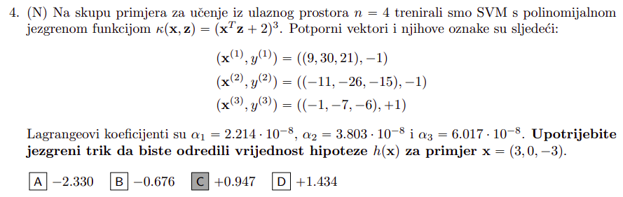

nika_1999 najprije trebaš izračunati vektor težina \mathbf{w} kako bi mogao računati gubitke zglobnice. Taj vektor težina možeš iz vektora \boldsymbol{\alpha} = \left(\alpha_1 , \alpha_2 , \alpha_3\right) = \left(0, 0.01, 0.01\right) računati preko one poveznice kad se prelazilo iz primarnog problema meke margine u dualni:
\mathbf{w} = \sum_{i=1}^{N} \alpha_i y^{(i)} \mathbf{x}^{(i)}
Sve te podatke imaš, kad se uvrsti dobiješ \mathbf{w} = \left(0.02, 0, 0.03\right)
Empirijska pogreška SVM-a na skupu \mathcal{D} se računa kao:
E_{R} \left(\mathbf{w}, w_0 \vert \mathcal{D} \right) = \sum_{i=1}^{N} \max{\left(0, 1 - y^{(i)} h \left(\mathbf{x}^{(i)}; \mathbf{w}, w_0\right)\right)} \ + \frac{1}{2 C} \| \mathbf{w} \|^2
gdje je h \left(\mathbf{x}; \mathbf{w}, w_0\right) = \mathbf{w}^{\mathrm{T}} \mathbf{x} + w_0 hipoteza iz primarnog modela (w_0 = -0.8 je dan da se može izračunati). Zadatak kaže da je korištena linearna jezgra, pa kao stoga nema dodatnog preslikavanja primjera nego uz težine stoje sirovi, nepreslikani primjeri \mathbf{x}. Za primjere one redom iznose -1, -1, -0.87
Stoga njihovi gubici zglobnice iznose redom 0, 0, 1.87, dakle u zbroju daju 1.87, kvadrat L2 norme iznosi \| \mathbf{w} \|^2 = 0.0013, C = 0.01 je također zadan i kad sve to uvrstiš dobiješ
E_{R} \left(\mathbf{w}, w_0 \vert \mathcal{D} \right) = 1.87 + \frac{1}{2 \cdot 0.01} \cdot 0.0013 = 1.935
Edit: tek sad sam shvatio da si mogao iznose hipoteza računati i bez vraćanja nazad u primaran model, al u svakom slučaju ti trebaju težine iz primarnog modela zbog regularizacijskog faktora.
On topic, jel uspio netko ovaj: V10 - Jezgrene metode, zadaci s ispita 4. zadatak
nikak ne mogu doći do rješenja, kod računanja hipoteze ona suma koja ima alfe, oznake i jezgrenu funkciju mi ispada reda veličine 10^{-3}, nisam išao računati w_0 jer sam odustao
